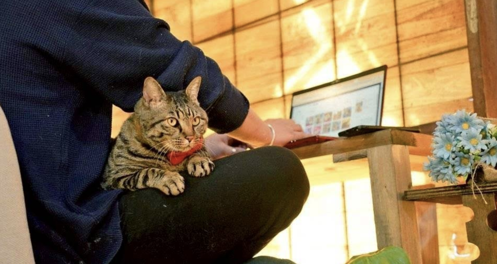
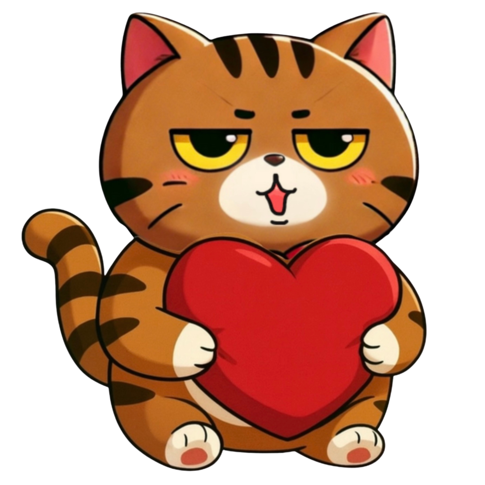
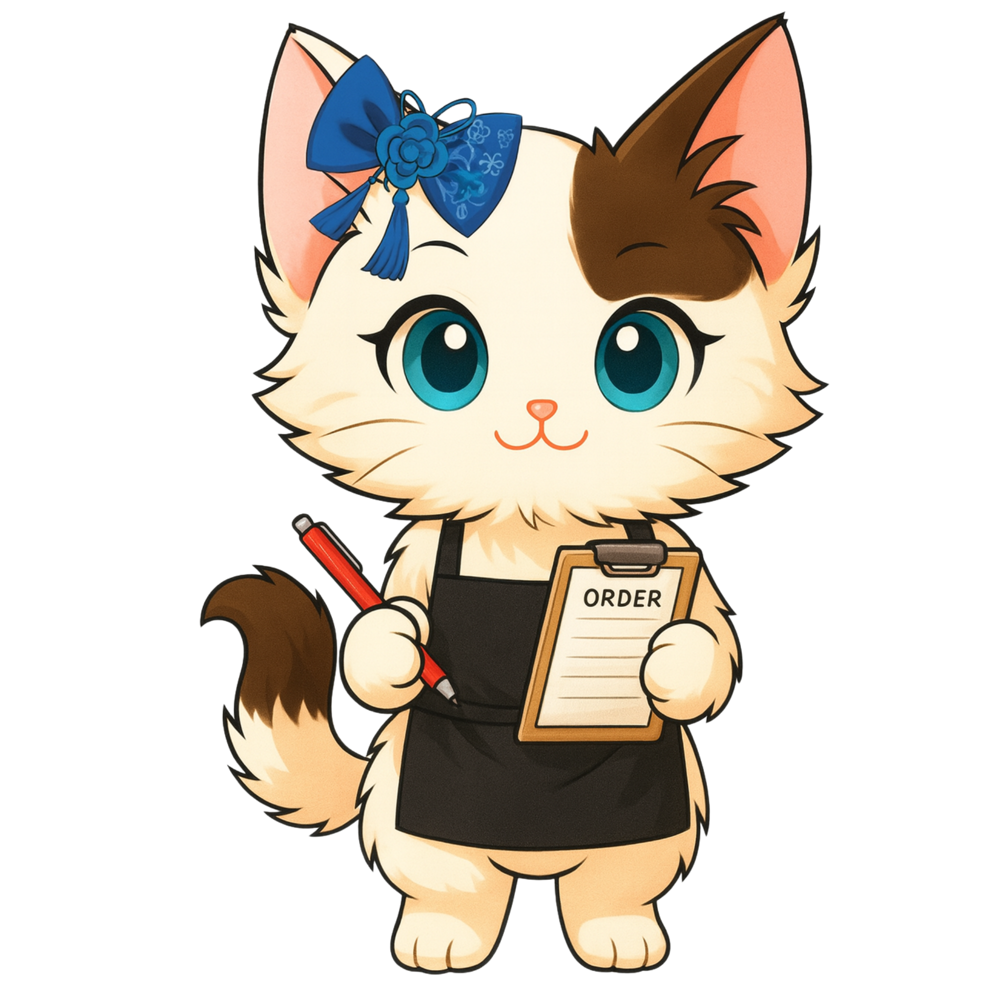
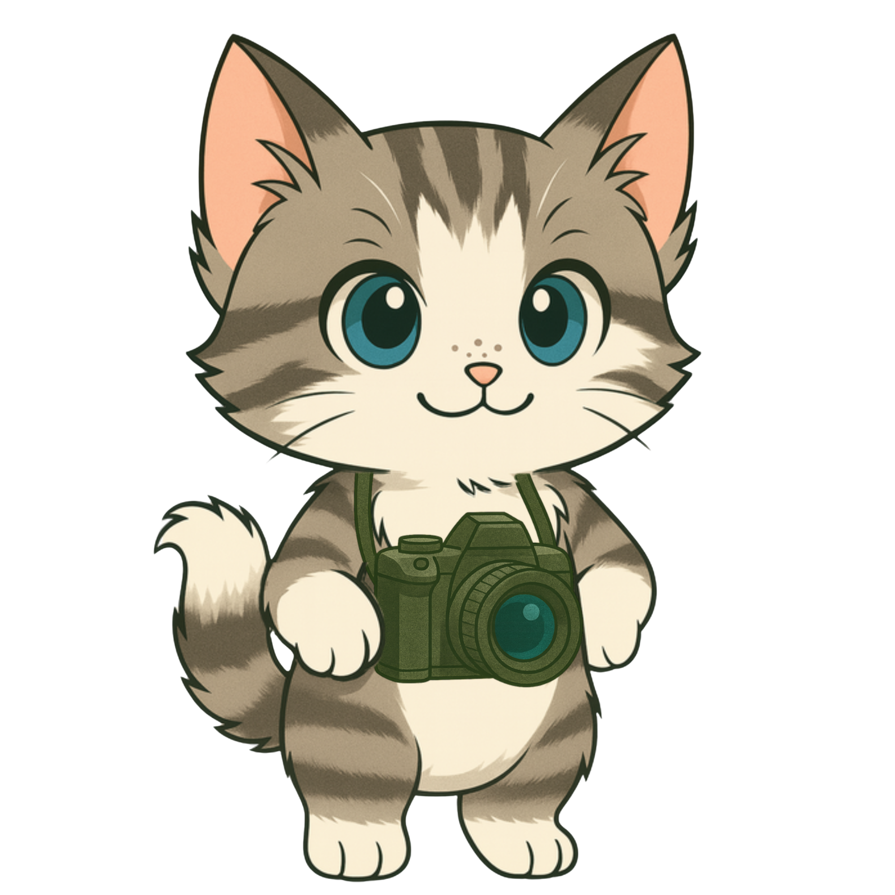

ボランティア募集
猫と過ごす､
特別な週末｡

ボランティアの対価としてご飯が無料になります！
猫に癒されながらのんびり社会貢献、してみませんか？
アトリエボランティア 2つの特典
ボランティアの内容は猫のお世話や店番への案内だけ。案内が書かれた冊子をお渡しいただくだけの簡単な内容になります。
来客がない間は漫画を読んでいても仕事をしていてもOKです。Wi-Fi完備！

姉妹店『マシマシ高菜先生食堂』のメニューから1食提供致します。（※2名以上で参加の場合は人数×1時間以上）。
吉田のうどん、二郎系うどん、ほうとう、とり天など。

当日の流れ

予約
まずは公式LINEにお問い合わせ・ご予約ください。参加人数と希望日時をご連絡いただくとスムーズです。

当日受付
ご予約いただいた日時にお越しください。初めてお手伝いをお願いする場合は、簡単な説明をさせていただきます。

お手伝い
受付、除菌のお世話や来客時の対応をお任せします。来客がない間は自由に猫達との時間をお過ごしください。
お食事
お好きなタイミングでお食事を1食無料で提供致します。
募集要項
-
週末のみ
募集は週末や祝日のみですが、回数は無制限。何度でもご参加いただけます。 -
1回1時間以上
開始時間はアトリエの営業時間内ならいつでもOK。1名につき1食お食事を提供いたしますので、1食につき1時間以上のボランティアをお願い致します。 -
人数制限なし
お友達同士のご参加も大歓迎。3人で食べた場合は合計3時間以上の滞在をお願いしております。 -
身だしなみ
服装・髪型は自由ですが、お客様対応があるため、最低限の清潔感のある身だしなみをお願いします。
猫のご紹介
アトリエ高菜先生には高菜先生をはじめ、事情があり飼えなくなってしまった兄弟、保健所行きが決まっていた子猫、大怪我していた猫など訳アリの保護猫が計７匹住んでいます。なかなか猫に触れ合えることのない方はぜひ会いにきてください！

高菜先生
2019年8月2日宮崎県出身。2019年10月より山梨県に移住し超超エリート株式会社に入社。2代目看板猫をつとめる。現在は旨辛唐辛子ブランド【激辛高菜先生】や猫カフェ・コミュニティスペース【アトリエ高菜先生】の顔として活動している。世界一有名な猫を目指している。

デイビッド・ウニ
2021年生まれの4歳。ししゃも・ノートルダムの弟。山梨県都留市出身。永遠と遊んでられる体力の持ち主で、常にオモチャで遊んでおきたい行動派猫。遊んでくれるなら誰でもOKで人見知りなど一切しない白猫。非常にすばしっこい。

ししゃも・ノートルダム
2021年生まれの4歳。デイビッド・ウニの兄。山梨県都留市出身。基本的にやる気がなくほとんど何もしないけど、お腹が空いてるときだけはアピールがすごい。人見知りはしないけど積極的に近寄ってくるわけでもない。難病もちで何度か手術をしている。

ミルク山岡
2024年生まれの猫。山梨県笛吹市のとある企業の敷地内で保護され、誰も引き取ることができず保健所に行くことに。アトリエ高菜先生の代表桑原淳がたまたまSNSでそれを見かけて引き取ることに。非常にヤンチャで元気。一生走っている。

小野のおピッピ
山梨県笛吹市出身。年齢不詳で推定10歳から15歳のおばあちゃん。大けがしているところを保護され、療養ののちにアトリエへ。基本的に寝ているが気分で膝に乗って甘えてくる。

綾小路 嬢ミノ
2023年7月生まれ。エドモンド本田翼の姉。富士河口湖町出身。基本的にのんびりおっとりな、おしとやかなタイプの女の子。スタッフが飲み会をしている時にノリで名前をつけられてしまった。

エドモンド本田翼
2025年9月生まれ。綾小路嬢ミノの妹。富士河口湖町出身。とにかく動いてないと気がすまないタイプ。当初オスだと勘違いして副キャプテン翼の名を授かるも、のちに女の子だとわかり改名。
アクセス
アトリエ高菜先生
| 住所 | 〒401-0301 山梨県南都留郡富士河口湖町船津3250-3 |
|---|---|
| 駐車場 | 無料駐車場有 |
| 予約 | 不要 （ほぼ年中無休で営業しておりますが、確実にご利用になりたいという方は事前のお問い合わせをお願い致します。） |
| 営業時間 | AM 11:00~17:00 |
| 定休日 | 不定休 |
| 催行人数 | 1名〜 |
| 最寄駅 | 富士急行線河口湖駅（徒歩12分） |